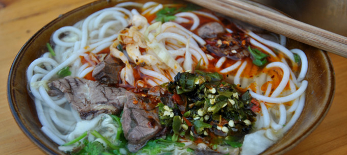
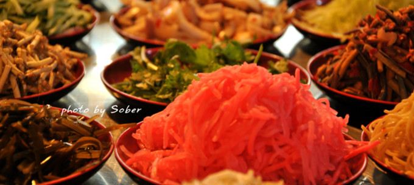
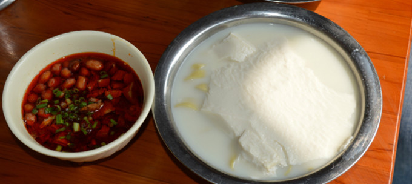

贵阳，贵州省省会，简称筑、金筑，有“林城”之美誉，因境内贵山之南而得名。是贵州省的政治、经济、文化、科教、交通中心和西南地区重要的交通、通信枢纽、工业基地及商贸旅游服务中心 [1-2] 。西南地区中心城市之一[3] 、全国生态休闲度假旅游城市[4] 和全国综合性铁路枢纽[5] 。属于亚热带湿润温和型气候，年平均气温15.3℃，年平均相对湿度77%，2016年森林覆盖率为46.5%，有森林公园11个。
贵阳地处黔中山原丘陵中部，地势西南高、东北低，海拔1100米左右。位于贵州省中部，东南与黔南布依族苗族自治州瓮安、龙里、惠水、长顺4县接壤，西靠安顺地区平坝县和毕节地区织金县，北邻毕节地区黔西、金沙2县和遵义市播州区。截至2017年，贵阳市下辖6个市辖区，3个县，代管1个县级市。
贵阳辖区总面积8034平方公里，是国家级大数据产业发展集聚区[6] 、呼叫中心与服务外包集聚区[7] 、大数据交易中心、数据中心集聚区[8] 。为中国首个国家森林城市[9] 、国家循环经济试点城市[10] 、中国避暑之都[11] ，荣登“中国十大避暑旅游城市”榜首[12] 。
贵阳之名较早见于明（弘治）《贵州图经新志》，元代始建顺元城，明永乐年间，贵州建省，贵阳成为贵州省的政治、军事、经济、文化中心。境内有30多种少数民族，有山地、河流、峡谷、湖泊、岩溶、洞穴、瀑布、原始森林、人文、古城楼阁等32种旅游景点。
| 素粉 | 丝娃娃 | 折耳根炒腊肉 | 豆腐脑 |
|---|---|---|---|
|  |  |  |